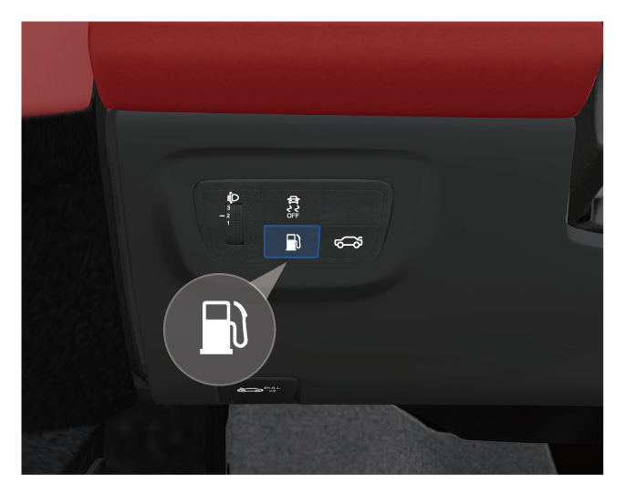

–长按油箱盖板开启按键 ，油箱盖板将向外弹起。
，油箱盖板将向外弹起。
6.4 检查和添加油液
6.4.1 燃油
随着车辆行驶过程中燃油量的减少，燃油表刻度会逐渐减少。
当燃油存量过低时，指示灯黄色闪烁，组合仪表会有报警信息，此时应尽快添加燃油。
添加燃油


–完全打开油箱盖板，逆时针缓慢旋出加油口盖①，完全拧出时将加油口盖①停留在原位片刻，待燃油箱释放内部的燃油蒸汽压力，然后取出。

–将加油口盖挂在油箱盖板内侧，开始添加燃油。
–加完燃油后，顺时针方向拧紧加油口盖①，直至听到“咔嗒”声，表示加油口盖已拧紧。
应急解锁
车辆没电状态下或油箱盖板电动开关无法操作时，可按以下操作打开油箱盖板
–打开行李箱盖。
–长拉动应急解锁开关①解锁油箱盖板。
— 页面到底了 —